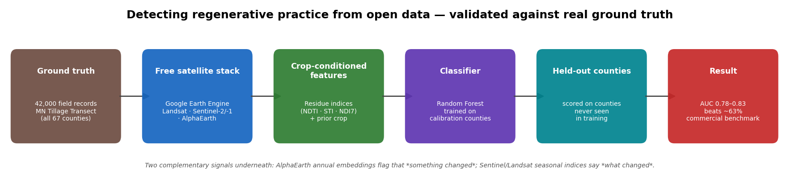
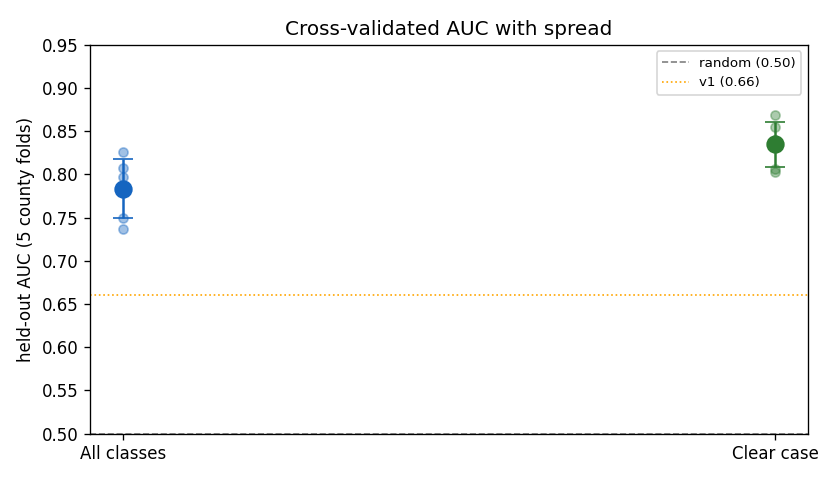
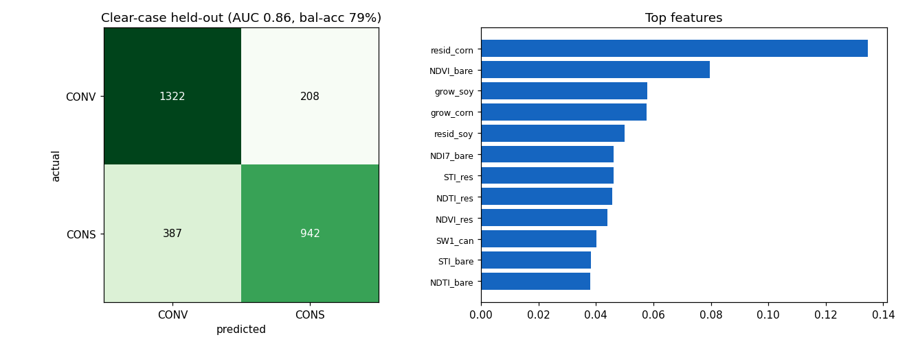

At-scale validation against real ground truth · 2026-06-03

The approach. Free, open data end-to-end; the model is trained on some counties and graded on entirely separate ones, so the score reflects real generalization.

Cross-validated accuracy. Each dot is one county-fold; bars are mean ± spread. Well above random (0.50) and the earlier 0.66 baseline, with a tight band.

Where it's right, and what drives it. Confusion matrix on held-out counties (clear case) and the top features — note prior-crop conditioning (resid_corn) leads.